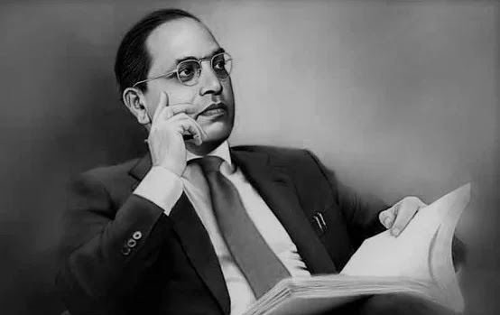

Dr.Babasaheb Ambedkar

Unlike a drop of water which loses its identity when it joins the ocean,
man does not lose his being in the society in which he lives. Man's life is independent.
He is born not for the development of the society alone
man does not lose his being in the society in which he lives. Man's life is independent.
He is born not for the development of the society alone
THE LEADER OF THE SILENT
1891
Bhimrao Ambedkar was born on 14 April 1891 in Madhya Pradesh
1908
Ambedkar went to study at the Elphinstone College, Mumbai In 1908
1912
Graduated in Political Science and Economics from the Bombay University in 1912
1927
On 8 June, 1927, he was awarded a Doctorate by the University of Columbia
1956
On 6 December, 1956 he died at his home in Delhi
1982
B. R. Ambedkar Open University was established by an act of Andhra Pradesh
State legislature on 26th August 1982
1990
India's highest civilian honour in 1990